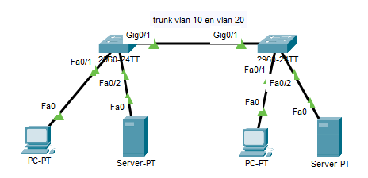

In de vorige oefening maakte je VLAN's op één switch. Zodra je netwerk uit meerdere switches bestaat, heb je access ports en trunk ports nodig. Die staan uitgelegd bij Trunk port vs access port. Kort samengevat: een access port draagt één VLAN naar een eindtoestel, een trunk port draagt meerdere VLAN's tussen twee switches.
Download het startbestand en open het in Cisco Packet Tracer.

Stel switch0 en switch1 allebei als volgt in.
| VLAN | Naam | Poort | Type |
|---|---|---|---|
| 10 | clients | fa0/1 | access port |
| 20 | servers | fa0/2 | access port |
| 10 en 20 | gig0/1 | trunk port |
Ben je klaar, klik dan op Check Results in het venster van de oefening.